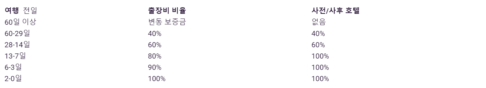

-
여행에 무엇이 포함되어 있습니까?
각 여행 페이지에는 여행 가격에 정확히 무엇이 포함되어 있는지에 대한 정보를 제공하는 '포함된 항목' 섹션이 있습니다. 우리의 모든 여행에는 교통편, 숙박, 약간의 (침을 흘릴 만한) 식사, 믿을 수 없는 경험과 멋진 AF Topdeck 크루가 포함됩니다. 포함된 항목은 여행마다 다르므로 여행 페이지를 확인하십시오. -
여행에 포함되지 않은 것은 무엇입니까?
개인 지출 비용(duh), 비자, 개인 여행 보험, 의료비, 항공권, 출국세 및 여행 페이지에 명시되지 않은 식사. 여행 페이지의 '포함된 경험' 섹션에 명시되어 있지 않는 한 여행 및 입장료도 포함되어 있지 않습니다.
우리는 여가 시간에 할 수 있는 가장 좋은 일을 찾기 위해 전 세계를 샅샅이 뒤졌고 '선택적 활동'이라고 이름을 붙였습니다. 이것들은 여행 가격에 포함되어 있지 않지만 예산을 위한 것으로 적극 권장됩니다. -
항공편이 포함되어 있습니까?
여행이 시작되고 끝나는 목적지를 오가는 국제선 항공편은 포함되어 있지 않으며 별도로 구매해야 합니다. 그러나 DW, 최고의 견적을 위해 쇼핑할 수 있는 온라인 옵션이 많이 있습니다. 또는 여행사를 통해 예약하세요. 쉽게!
Topdeck 여행 중 탑승하는 모든 항공편은 여행 페이지의 '포함된 항목' 섹션에 나열됩니다. 모든 것이 예약의 일부로 분류되며 항공편 비용은 전체 여행 가격에 포함됩니다. -
자유 시간이 있습니까?
긴장을 푸십시오. 당신은 자유 시간을 많이 가지고 있습니다. 그리고 그 모든 자유 시간으로 무엇을 할 것인지 결정하는 데 도움이 필요하시면 저희가 도와드리겠습니다
여행 내내 우리는 당신이 좋아할 다양한 '선택 활동'을 조직했습니다. 여행 페이지에서 귀하의 여행과 관련된 '선택 활동' 목록과 예산 책정에 도움이 되는 대략적인 가격을 찾을 수 있습니다.
그리고 완전히 독창적이지 않은 이름에서 알 수 있듯이 완전히 선택 사항입니다. 따라서 탑승을 원하는지 아니면 자발적으로 할 것인지 선택하고 선택할 수 있습니다. -
얼마나 많은 사람들이 함께 여행을 할까요?
그룹 크기는 여행마다 다릅니다. 평균적으로 호텔 또는 호스텔 플러스 여행에는 약 35명의 승객이 함께 여행합니다(최대 그룹 크기는 48명). 대부분의 익스플로러 여행에는 평균 16~20명의 Topdeckers가 있으며 최대 그룹 크기는 30명입니다.
특정 여행에 마음이 맞는 여행자가 몇 명인지 알고 싶다면 고객 서비스 팀이 도와드릴 수 있습니다. 라이브 채팅을 이용하거나 전화를 걸어보세요. -
어떤 사람들이 여행을 떠날까요?
호기심많은? 개방적인? 이랄까. Topdeckers는 혼합 무리이지만 그것이 우리를 특별하게 만드는 것입니다. 그들은 전 세계에서 왔으며 18세에서 39세 사이입니다. 당신과 마찬가지로 그들도 현실감을 느끼고 싶어합니다. 더 많은 것을 경험하기 위해. 미지의 것을 포용하기 위해. 편견없이 성장하고 연결합니다.
그들을 조금 더 알고 싶으십니까? 여행이 시작되기 전에 Topdeck 앱을 다운로드하고 동료 Topdeckers와 연결하여 함께할 사람에 대한 정보를 얻고 여행 전/후 소식을 확인하세요. -
혼자 여행하면 문제가 될까요?
별말씀을 요! 아주우우우우 많은 Topdeck 이용자들이 나홀로 여행자입니다. 사실, 우리 여행자의 50% 이상이 혼자 여행을 시작하고 평생 동반자와 함께 여행을 마칩니다!
또한, 의무적인 싱글 보충을 청구하지 않습니다. 대신 동성의 멋진 AF 룸메이트와 연결해 드립니다. 그러나 밤에 100% 혼자 라이딩을 하고 싶다면 호텔 또는 익스플로러 여행이 적합합니다. 온라인이나 전화로 고객 서비스 팀과 채팅하면 처리해 드립니다. -
탑덱은 어떤 교통수단을 이용하나요?
번거롭지 않은 내부 비행에서 룸미 같은 온로드 버스에 이르기까지, 가끔 현지 교통 수단(예로 일본 신칸센)까지 - A에서 B까지 편안하고 스타일리시하게 안전하게 모셔다 드립니다. 이동 수단은 여행마다 다르므로 여행 페이지의 '포함된 항목'에서 세부 사항을 확인하십시오. -
어떤 유형의 숙박 시설에서 숙박합니까?
활동의 중심에 있는 고급 호텔부터 현지 생활 방식에 몰입할 수 있는 독특한 지역 숙박에 이르기까지 선택한 목적지와 여행 스타일에 따라 다양한 숙박 스타일이 있습니다.
개성 넘치는 호텔, 사교 호스텔, 범선, 사파리 롯지, 해변 휴양지, 사막 캠프, 현지 홈스테이 등을 생각해 보십시오. 일생일대의 여행에 대한 세부 사항을 알아보려면 여행 페이지의 '포함 사항' 아래 숙박 시설 섹션으로 이동하거나 고객 서비스 팀에 문의하여 다양한 여행 스타일에 대해 자세히 알아보세요.
알아야 할 사항
-
호텔 여행은 어떻게 진행되나요?
방을 얻다. 커플 또는 2인으로 호텔 여행을 예약하고 트윈룸 또는 더블룸을 선택하여 자신의 방을 부르십시오. 그리고 혼자 간다면? 같은 성별의 다른 나홀로 여행자와 짝을 지어드리겠습니다.
미국과 캐나다에서는 호텔, 모텔 및 롯지를 결합한 숙박을 기대할 수 있습니다. 유럽에서의 우리 호텔 여행은 행동 사이에서 강력하거나 편리한 대중 교통 링크 바로 옆에 있는 양질의 캐릭터로 가득 찬 호텔이 혼합되어 있습니다. 즉, 택시 요금을 떼먹지 않고 기지까지 걸어가거나 길을 잃는 일도 없습니다(고의가 아닌 한).
호텔 여행은 위치나 경험에 대한 타협 없이 약간의 안락함을 누리고자 하는 여행자를 위해 고안되었습니다. 일부 유럽 도시 및 건설된 목적지의 호텔 객실은 익숙한 것보다 작을 수 있습니다. 하지만 여전히 욕실이 딸려 있습니다. 그리고 어쩌면 헤어 드라이어도 있습니다. 마음이 날아갈 것입니다. -
호스텔 Plus 여행은 어떻게 진행되나요?
사회 생활을 수용하십시오. 호스텔 Plus 여행을 예약하면 호스텔 바에서 같은 생각을 가진 사람들과 어울리고, 친선 당구 게임에서 202번 방과 대화하거나, 휴식을 취하면서 Topdeckers 동료들과 '꼭 해야 할 일' 목록을 만드는 것으로 가득 차게 될 것입니다.
객실은 남녀 공용입니다(보통 최대 침대 6개). 모든 호스텔 Plus 여행에는 수건과 침구가 제공됩니다. 네, 룸미보다 더 빨리 침대 아래에 있는 샷건을 불러야 하고 바디 워시를 샤워 블록으로 가져가야 하지만 그것도 경험의 일부입니다.
모든 호스텔 Plus accomm은 중앙에 위치하거나 대중 교통 연결과 가깝습니다. 의미? Uber에서 하기 위해 온 시간보다 더 많은 시간을 할애합니다.
그리고 방을 같이 쓴다는 것은 당신이 눈여겨보던 스카이다이빙을 위해 충분한 현금을 남길 수 있다는 것을 의미합니다! -
답사 여행은 어떻게 진행되나요?
아마도 당신은 큰 유로 여행을 했고 당신이 가장 좋아하는 목적지에 대해 더 깊이 탐구하고 싶을 것입니다. 또는 새로운 어딘가에 사로잡혀 완전히 경험하고 싶어합니다. 아니면 Bravo Italia 여행을 보았고 '그건 좋아 보인다'고 했습니다. 요점은 – 익스플로러 제품군은 여러분이 하고 싶은 일을 할 수 있는 더 많은 자유 시간을 제공한다는 것입니다.
최대 30명의 승객(평균 20명에 가까움)이 있는 익스플로러 여행은 보다 친밀한 경험을 원하는 여행자를 위해 만들어졌습니다. 탐험가 여행은 탐험에 더 많은 시간을 제공합니다. 관광 트레일을 벗어나는 더 많은 자유 시간. 현지 문화에 몰입할 수 있는 더 많은 자유 시간. 순간에 더 많이 길을 잃는다.
케냐에서 발리까지, 우리의 모든 탐험가 여행에는 멋진 AF 현지 가이드가 있습니다. 이 지역에 특정한 팁, 요령 및 권장 사항을 제공할 준비가 되어 있고 기다리고 있습니다.
그리고 숙소는? 호텔, 게스트하우스, 호스텔, 사파리 롯지, 홈스테이, 야간 열차, 보트, 사막 캠프 등의 혼합된 가방에 머물게 될 것입니다. 절친, 연인, 새로운 Topdecker 룸메이트와 공유하거나 트윈룸/더블룸에서 혼자 비행하려면 추가 비용을 지불하세요. -
항해 여행은 어떻게 진행되나요?
당신을 위한 해적의 삶. 우리의 항해 여행은 청록색 바다에 몸을 담그고, 왕좌의 게임 스타일의 경치를 즐기고, 새로운 선원들과 함께 (말 그대로) 꼭대기 데크를 식힐 시간입니다.
보트에 대해 이야기합시다. Dubrovnik Dreams 여행에는 전통적인 목조 보트 여행이 포함됩니다. 아늑한 이층 침대와 소박한 공용 공간을 생각해보세요. 크로아티아 리비에라 여행은 전통 보트 또는 플러스 보트 중에서 선택할 수 있습니다. 플러스 보트에는 더 큰 선실과 따뜻한 아침 식사와 같은 추가 옵션이 제공됩니다. 모든 보트에는 실내 욕실과 에어컨이 있는 트윈 또는 더블 캐빈이 있습니다. 그리고 정말 필요한 경우 엔진이 작동 중일 때 Wi-Fi가 있습니다.
기내 공간이 협소하므로 부드러운 백팩이나 배낭을 메고 가볍게 여행하는 것이 좋습니다. 팁: 크로아티아에서는 팁이 표준이므로 좋은 시간에 감사하기 위해 현지 승무원 1인당 약 10유로 정도의 작은 팁을 권장합니다(Topdeck 세일링 담당자, 내치는 제외). 또한 대자연은 변덕스러운 여주인이 될 수 있으므로 여행 일정은 기상 조건에 따라 변경될 수 있습니다. -
파트너와 함께 호스텔 Plus 여행 또는 답사 여행을 하고 있습니다. 방을 같이 쓸 수 있을까요?
호스텔 Plus 및 답사 여행의 호스텔 객실은 남녀 기준으로 예약됩니다. 따라서 이성애 커플은 공유를 기대해서는 안됩니다.
그러나 여행 리더는 가능한 한 커플을 함께 방으로 보내려고 노력할 것입니다. 예를 들어, 트윈 또는 더블 쉐어 숙박 시설이 특정 위치에 있는 경우 개인 방을 공유할 수 있습니다. 두 명 이상의 커플이 함께 공유할 수 있도록 그룹의 다른 커플과 조정하는 것도 가능합니다. 이것은 전적으로 여행 리더의 재량입니다. -
객실 추가 요금이 있습니까?
때에 따라 다릅니다. 모든 여행 가격은 트윈, 더블 또는 다중 공유 옵션을 기준으로 하지만 특정 여행의 경우 싱글, 트윈 또는 더블룸 추가 요금을 제공할 수 있습니다. 여행과 관련된 업그레이드 정보는 라이브 채팅을 하거나 친절한 고객 서비스 팀에 전화하십시오. -
숙박 방법
-
예약할 때 전액을 지불해야 하나요?
당신이 출발 날짜보다 훨씬 전에 여행을 예약했다면 선택한 여행에 대한 보증금만 내면 됩니다. 그런 다음 출발 60일 전까지 나머지 금액을 지불해야 합니다.
여행 출발 60일 이내로 예약하는 경우 전체 금액을 선결제해야 합니다. 예약 조건 및 지불 정책에 대해 자세히 알아 보려면 여기 를 클릭 하십시오 . -
보증금은 얼마입니까?
예약하는 통화에 따라 다르겠지만 안심하세요. 매우 저렴합니다! 선택한 여행에 대해 지불해야 하는 보증금을 알아보려면 도움이 되는 고객 서비스 팀에 전화(또는 실시간 채팅)하십시오. -
'유연한 자유'란 무엇입니까?
상시 운영되는 '자유로움' 정책은 일생일대의 여행을 예약하고 결제할 때 유연성을 제공합니다. 당사의 '자유로움' 예약 조건 및 이용 약관에 대한 자세한 내용은 여기를 참조하십시오 . -
탄력적립금이란?
우리는 그것을 이해합니다, sh*t 발생하고 때로는 계획을 취소해야 합니다. 전액 지불 기한 전에 여행을 취소하면 보증금을 뺀 금액을 환불해 드립니다. 다른 여행, 다른 시간에 사용할 수 있도록 보증금을 보류하겠습니다. 이용 약관이 적용되므로 여기에서 전체 내용을 확인하십시오 . -
결제는 어떻게 하나요?
1. 친절하고 매력적인 고객 서비스 팀으로 구성된 Topdeck HQ에 전화하세요. 전화로 안전하게 결제를 처리해 드립니다.
2. $$$를 Topdeck의 은행 계좌로 이체합니다. 청구서 하단에서 은행 잔고를 확인하거나 고객 서비스 팀에 문의하십시오.
3. Topdeck 앱 또는 온라인에서 My Topdeck 계정을 통해 결제합니다.
-
신용카드로 결제하면 신용카드 수수료가 있습니까?
Topdeck은 신용 카드 수수료를 청구하지 않지만 귀하의 은행이나 여행사가 수수료를 부과할 수 있습니다. -
여행에 대한 최종 문서는 언제 받을 수 있습니까?
여행 비용을 전액 지불하고 필요한 모든 개인 정보를 제공하면 필요한 모든 것이 받은 편지함으로 바로 배달됩니다. My Topdeck 계정을 통해 또는 당사 고객 서비스 팀에 연락하여 온라인으로 세부 정보를 작성할 수 있습니다.
여행 전에 저희가 보내드리는 자세한 여행 정보를 반드시 읽어야 합니다. 이는 당사 웹사이트의 여행 페이지, Topdeck 앱에서 언제든지 다운로드할 수 있으며 문서와 함께 이메일로도 발송됩니다. 여행 노트에는 주의해야 할 중요한 사항이 많이 포함되어 있으므로 시간을 내어 다운로드하여 읽으십시오.
여행사를 통해 예약한 경우 문서가 여행사에 직접 전송됩니다. -
예약을 취소해야 하는 경우 어떻게 됩니까?
예약 취소는 서면으로 이루어져야 합니다. 이메일을 통해 서면 통지를 받을 때까지 예약이 취소된 것으로 간주하지 않습니다. 취소 시 다음 요금이 부과됩니다.
 -
여행 전후에 체류를 연장할 수 있습니까?
우리는 번거롭지 않게 여행 전후 숙박을 준비할 수 있습니다. 우리의 전문 고객 서비스 팀에 연락하기만 하면 모든 것을 정리할 것입니다.
비행기를 타고 런던으로? 4일간의 런던 단기 휴가로 여행 전 체류를 최대한 활용하십시오. 유럽 여행을 시작하는 좋은 방법입니다. -
여행 예약
-
여행자 보험이 필요합니까?
전적으로! 모든 Topdecker는 취소, 부상 및 의료 비용과 같은 비용을 충당할 수 있는 포괄적인 여행 보험에 가입해야 합니다. 그것 없이는 우리와 함께 여행할 수 없습니다. 또한 귀하가 취하는 정책의 작은 글씨를 읽는 것이 매우 중요하므로 귀하가 보장되는 활동(당신을 바라보는 아드레날린 중독자!)과 비상 시 초과 한도가 무엇인지 정확히 알 수 있습니다. 여행 중 및 여행 후. 원칙적으로 여행 예약 시 여행자 보험에 가입해야 합니다. -
여행자 보험을 판매합니까?
짧은 대답 : 아니요.
그러나 고객 서비스 팀은 제휴 여행 보험 제공업체를 통해 호주 시민을 위한 보험을 마련할 수 있습니다. 라이브 채팅으로 메시지를 보내거나 전화를 받으십시오. -
여행자 보험은 어디에서 받을 수 있나요?
거기에는 정말 많은 다른 회사가 있습니다. 대형 슈퍼마켓, 백화점, 은행에서 여행자 보험을 판매하고 있습니다. 찾는 것은 어렵지 않지만 세부 사항을 잘 읽고 자신과 여행 계획에 맞는 것을 구입하십시오. -
무엇을 가져가야 하나요?
글쎄요, 여권은 항상 좋은 출발점입니다. 일생일대의 여행을 위해 포장해야 하는 모든 품목에 대한 포괄적인 목록이 있는 것은 아닙니다. 스스로 알아낼 수 있다는 것을 알고 있습니다. 그러나 몇 가지 팁이 필요하면 고객 서비스 팀이 소매를 거의 닫지 않습니다. 질문과 대화를 나누십시오. -
얼마나 많은 돈을 가지고 가야합니까?
그건 다양합니다! 아, 구매가능한 많은 훌륭한 기념품과 참여할 수 있는 도시의 밤이 있습니다. 많은 식사가 포함되어 있으므로 몇 가지 식사와 개인 지출을 예산에 남길 수 있습니다.
또한, 저희가 준비한 멋진 AF '선택 활동'도 잊지 마세요. 베니스의 곤돌라 타기부터 발리의 스쿠버 다이빙에 이르기까지 모두를 위한 무언가가 있습니다. 따라서 예산을 세울 때 염두에 두십시오. 대략적인 가격은 여행 페이지에 설명되어 있습니다. -
Wi-Fi에 정기적으로 연결할 수 있습니까?
예! 우리가 머무는 대부분의 장소는 무료 Wi-Fi를 제공합니다(사하라 사막 한가운데 또는 나일강을 따라 felucca를 타고 항해하는 동안 제외). 또한 ET가 집에 전화를 해야 할 경우 유럽 코치가 무료 Wi-Fi를 제공합니다. 하지만 무제한이 아니므로 숙박 시설의 스트리밍 및 다운로드를 계속 유지합니다.
외출할 때 대부분의 레스토랑과 카페에서는 주문할 때 Wi-Fi에 연결할 수 있습니다. 또는 도착 시 현지 SIM을 구입하여 방황하는 동안 연결할 수 있습니다. 쉬운. -
여행 중에 연락이 됩니까?
물론. 숙박 시설과 일부 버스에서 무료 Wi-Fi를 사용할 수 있습니다. 또는 전화 제공업체와 국제 로밍 거래에 대해 이야기하거나 도착 시 현지 SIM 카드를 구입하십시오.
비상 시 연락이 필요한 경우 Topdeck HQ는 연중무휴 여행 리더에게 연락할 수 있는 직통 전화를 제공합니다. 당신은 우리와 함께 안전합니다. -
비자가 필요합니까?
여행에 적합한 비자를 취득하는 것은 귀하의 책임입니다. 올바른 비자가 없으면 여행의 일부(또는 전체)를 놓칠 수 있습니다. 여행사에 문의하거나 출발하기 전에 해당 대사관에 확인하십시오. 비자 요건은 단기간에 변경될 수 있음을 기억하십시오.
참고: 비자가 필요한 대부분의 국가에서 여행 중에는 비자를 받을 수 없습니다. 일부 비자는 취득하는 데 3-4주가 소요됩니다. 따라서 일찍 비자를 받으십시오! -
여행 백신이 필요합니까?
우리는 의학 학위가 없습니다. 일부 Topdeck 목적지에 대한 권장 예방 접종이 있습니다. 자세한 내용은 GP 또는 가까운 예방 접종 클리닉에 문의하십시오. -
내가 흡연자라면?
Topdeck 버스에서는 흡연이 허용되지 않습니다. 그러나 우리는 이곳저곳을 여행하는 동안 정기적으로 휴식을 취합니다. 텐트를 포함한 모든 숙소에서 흡연이 허용되지 않습니다. -
내가 특별한 다이어트를 한다면?
식이 요법이 필요한 경우 예약 시 여행사 또는 고객 서비스 팀에 알려주는 한 저희는 귀하의 요구 사항을 충족시키기 위해 모든 노력을 기울일 것입니다.
참고 사항: 귀하의 요구 사항을 충족하기 위해 최선을 다할 것이지만 Topdeck은 우리가 방문하는 모든 레스토랑에서 이것이 가능하다고 보장할 수 없습니다. 또한 포함된 대부분의 저녁 식사에는 세트 메뉴가 포함되어 있으므로 취향이나 싫어하는 음식을 제공할 수 없습니다.
여행 시작 시 여행 리더에게 식단 요구 사항을 다시 확인하십시오. -
질병이 있는 경우에는 어떻게 합니까?
여행에 영향을 미칠 수 있는 기존의 질병이나 장애가 있는 경우 예약 시 여행사 또는 고객 서비스 팀에 서면으로 알려주시기 바랍니다. 진단서 발급을 요청할 수 있습니다. 귀하의 특정 요구 사항을 만족스럽게 수용할 수 없다고 합리적으로 판단되는 경우, 당사는 예약을 거부하거나 귀하에게 완전한 지원을 제공할 수 있는 사람을 동반하도록 요구할 권리가 있습니다. -
여행 세부 정보를 최신 상태로 유지하려면 어떻게 해야합니까?
최신 정보를 유지하고 동료 Topdecker와 채팅하는 가장 좋은 방법은 Topdeck 앱을 다운로드하는 것입니다.
우리의 멋진 AF 고객 서비스 팀은 또한 귀하의 질문에 답변하기 위해 24시간 대기하고 있습니다. 그들에게 버즈를 주거나 라이브 채팅을 통해 메시지를 보내거나 소셜 미디어 DM으로 슬라이드하십시오. -
온로드 물건